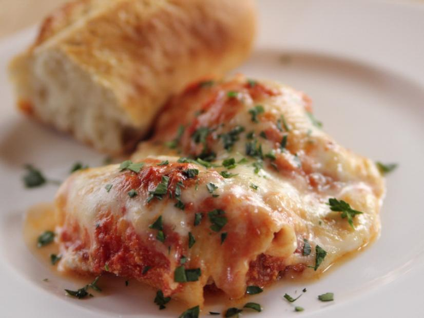

How to Make Stuffed Shells
Ingredients
- 2 tbsp. minced fresh parsley
- kosher salt
- 8 oz. jumbo pasta shells
- 30 oz. whole-milk ricotta cheese
- 1/2 cup grated Romano cheese
- 12 leaves fresh basil, cut into chiffonade
- 1 large egg
- Freshly ground black pepper
- 8 oz. Parmesan, grated
- 2 jars good-quality marinara sauce
- 8 oz. mozzarella cheese, grated
- Crusty French bread, for serving
Directions
- STEP 1: Preheat the oven to 350 degrees F.
- STEP 2: Bring a large pot of salted water to a boil. Add the pasta shells and cook for half the cooking time on the package;
make sure not to overcook. Drain and rinse in cool water. Set aside.
- STEP 3: In a bowl, mix together the ricotta, Romano, parsley, basil, egg, some salt and pepper and half of the Parmesan. Stir until combined.
- STEP 4: To assemble, coat the bottom of a baking dish with some sauce. Fill each half-cooked shell with the cheese mixture and place face-down on the sauce.
Repeat with the shells until the cheese mixture is gone. Top the shells with the remaining sauce. Sprinkle on the mozzarella and extra Parmesan.
- STEP 5: Bake until hot and bubbly, 25 minutes. Serve with crusty French bread.

Contact Me
If you have any questions, please concact me here:
Austin Cook
32 Campus Dr
Missoula, MT 59812
austin.cook@umconnect.umt.edu
Here is a link to the original recipe